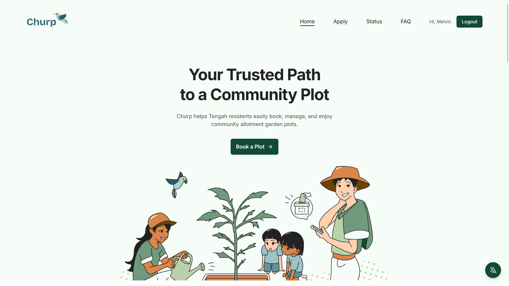

Project No.01
CramRAG — study tool
A RAG-powered study app that turns uploaded PDFs into graded quizzes and a citation-aware study chat. Custom retrieval pipeline with formal evaluation harness, deployed on HuggingFace Spaces.

Based in Singapore. I design appealing interfaces, engineer seamless workflows, and craft meaningful experiences.
"Developer by training, designer by instinct — building at the intersection of visual craft and engineering pragmatism."
I'm a Year 2 student at Singapore Institute of Technology, studying Applied Artificial Intelligence. I build full-stack web applications and care deeply about how they feel to use — not just how they work.
My design work lives at the intersection of visual craft and engineering pragmatism. I think about systems, constraints, and edge cases while designing — which means fewer surprises when it's time to build.
A RAG-powered study app that turns uploaded PDFs into graded quizzes and a citation-aware study chat. Custom retrieval pipeline with formal evaluation harness, deployed on HuggingFace Spaces.

A fine-tuned DistilBERT model classifying social media posts as normal, offensive, or hate speech with full softmax confidence scores. Deployed via FastAPI + React on HuggingFace Spaces.
A purpose-built internal data platform for A*STAR's battery remanufacturing programme. Filterable DataTable, multi-file upload with enforced metadata, and role-aware access control.
View case study

13 fully polished, minified SVGs for a community garden management app — from large web assets to icons to sample user portraits. Designed in Photoshop, translated to Figma, optimised for web.
View case study